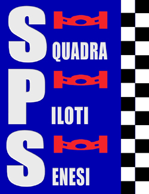
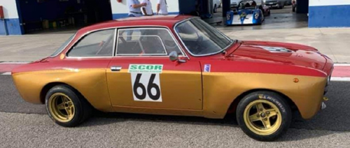

La Squadra Piloti Senesi nasce in Siena il 12 gennaio 1960.
Nasce come scuderia automobilistica dedicandosi allo sport dell’auto che in quel periodo vedeva la nascita di molti modelli di auto italiane e straniere costruiti espressamente per il mondo delle corse; basti ricordare Alfa Romeo, Lancia e Abarth che espressamente portavano nelle competizioni vetture nate dalla normale produzione e trasformate in vere auto da corsa, per non dimenticare certo il marchio Ferrari che ormai era sinonimo di vittoria in tutte le competizioni internazionali.
La Squadra Piloti Senesi si dedica prima ai piloti di Siena poi inizia a farsi conoscere sul territorio nazionale partecipando a gare in pista ed in salita, arrivando ad avere persino una sezione Sud con sede a Salerno. Gli anni 70’ rappresentano un periodo veramente interessante per il mondo dell’auto da corsa e la Squadra Piloti Senesi non manca di cogliere con i suoi piloti la conquista di titoli nazionali ed europei e soprattutto nelle auto turismo preparate coglie i migliori risultati. Amerigo Bigliazzi e Carlo Truci dopo i titoli nazionali riescono a conquistare gli allori europei e molti piloti nelle varie categorie dalle auto di serie, alle preparate e alle sport portano il nome della scuderia sui più alti gradini del podio. Anche Alessandro Nannini con i colori della Squadra Piloti Senesi vede le sue prime esperienze di corsa nei rally con una Lancia Stratos.

La scuderia vede un momento di minor attività tra gli anni 80’ e 90’, ma quando la Coppa del Chianti Classico nel 1994 riaccende i motori per le autostoriche, anche la Piloti Senesi decide di ripartire con maggiore impegno e interesse nel mondo delle corse e proprio con le autostoriche torna a riassaporare i circuiti e le salite. Nuovi e vecchi piloti mettono il casco e si danno battaglia per la conquista dei titoli nazionali che nel frattempo sono stati riservati a questa categoria di auto. Tornano le Abarth, le Fulvia e le GTA Alfa Romeo e torna la voglia di correre.

Gli ultimi anni sono stati un crescendo di successi ed oltre ai molti titoli italiani nelle varie classi in cui sono divise le autostoriche, prima Varno Betti nel 2000 con la Renault Gordini e nel 2002 Franco Betti con la Fiat 128 Rally hanno conquistato il Campionato Italiano della Montagna Autostoriche. I risutati continuano ad arrivare e nel 2005 Antonio Lavecchia conquista il titolo italiano assoluto nel Trofeo della Montagna Autostoriche seguito nella classifica assoluta da altri due portacolori della Piloti Senesi, Franco Betti e Uberto Bonucci.
Nel 2007 giunge un altro titolo tricolore con Mario Lorenzetti che conquista la vittoria assoluta nella Coppa CSAI della Montagna e ancora successi nel 2008 con la vittoria assoluta sempre nella Coppa CSAI della Montagna con Uberto Bonucci.

Con la stagione 2009 la Squadra Piloti Senesi porta a termine i suoi cinquanta anni di attività e le sue nozze d’oro con l’automobilismo le celebra con la conquista di sei Titoli Italiani nei Campionati della Montagna riservati alle auto storiche e con 8 titoli nello Challenge Salita Piloti Autostoriche

 ACCADDE OGGI
ACCADDE OGGI